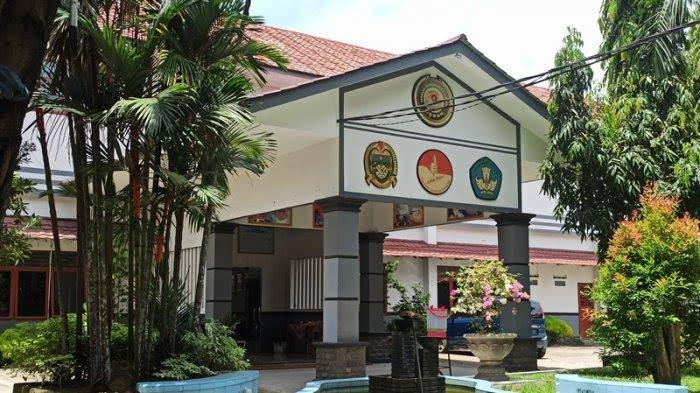

Personal
Nabelia Nainggolan nama lengkapnya, sering dipanggil dengan berbagai macam panggilan nama, tapi cukup panggil ia dengan Nabel/Abel. Anak sulung dari 3 bersaudara. Suka melakukan apapun yang ia inginkan selama tidak merugikan orang lain seperti Menggambar digital, salah satu hobi favorit yang dilakukan jika ada waktu luang.
Seorang yang ramah dan senang bersosialisasi, cukup aktif dalam kegiatan berkelompok dan selalu ingin ambil andil.
Pendidikan
Pendidikan Formal
Pengalaman
Bagi saya pengalaman semasa sekolah sangat penting untuk menambah skill dan mengasah kemampuan saya. Berikut ada beberapa pengalaman yang saya dapat dari semasa Sekolah saya
SMPN 18 MEDAN

Menjadi Anggota Ekskul PMR
Jujur, sejak SMP saya tidak pernah mengikuti ekskul apapun, karena memang tidak tahu ekskul itu bahkan ada di SMP saya dulu atau mungkin saya yang kurang update-? Jadi setelah menjadi Siswa SMKN 09 di kelas X saya mengikuti ekskul PMR yang awalnya karena saya penasaran bagaimana ekskul ini, dan pengalaman yang dapat saya bagikan adalah saat kelas XI dimana saya mengikuti LATGAB PMR (Latihan Gabungan PMR) yang membuat saya bersemangat karena rangkaian acara yang tidak membosankan dan seru, dapat bertemu para anggota PMR dari sekolah lain, dan bertukar sosial media.
Contact
Untuk Mengenal Lebih Lanjut dengan saya dapat dihubungi pada akun media sosial berikut ini :